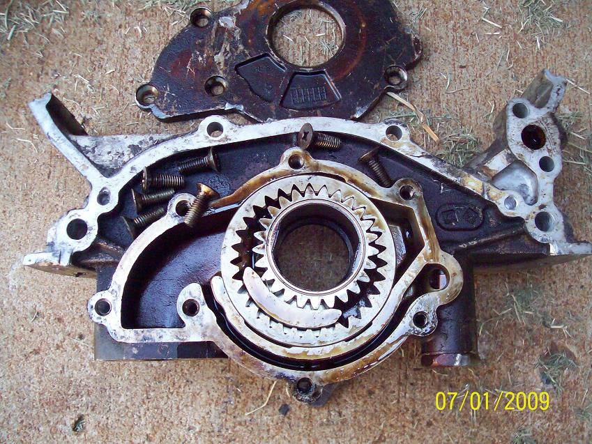
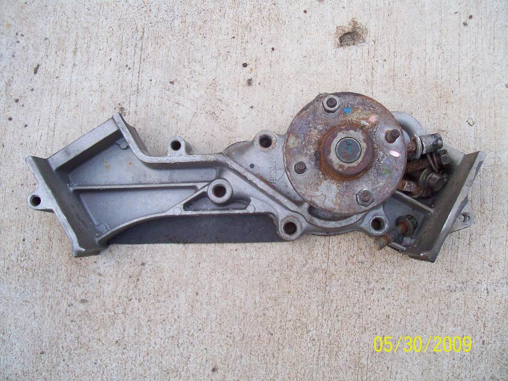
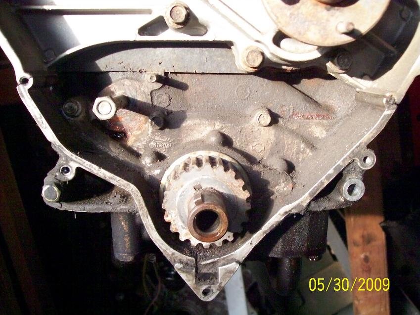

-
As far as I am aware there is only one known set of gears breaking. 1SickZ. No one else has ever stated or showed another set of cracked gears. Hell that could be chalked up to a manufacturing or material defect.The bullshit stops, when the GREEN light drops.
Only babies cry about the bottle. -
I thought I recall reading that Satan heard of other individuals having the same issue.Nissan Race Engine Machine Shop
Dedicated to VG performance and design http://www.epracing.net -
My old Z had cracked oil pump gears and banged up my bearings pretty bad too. That car is gone now and my shiro is my new build soon.
So my eyes are open..
If it makes matters worse the car was auto, turbo. So a better gear set made of better material is in order.Gone - 1988 Shiro
2004 BMW 330Ci
2005 BMW 330i
1991 Twin Turbo Z's (Red and Black)
http://www.E46Turbo330Ci.com -
RedBeauty84ZX wrote: Now does anyone know if the auto turbo oil pump is the same through out the years?LaterZ" I don't want to come off sounding butt-hurt, but I really loathe most cressida owners and I'm glad I soiled their platform with a Nissan dinosaur under the hood." - Butter -
Well I don't know if they are physically the same but both the fiche and courtesy parts show 2 part numbers for the auto turbo oil pump, up to 3/87 and from 3/87 on.
+(z31&cPath=2317_2318_2319_2339]http://www.courtesyparts.com/kb_search_result.php?keywords=[15010]+(z31&cPath=2317_2318_2319_2339
URL not working as a link so just copy and paste this one
fiche89 Black Z 5spd, tokico hp, msa springs, k&n cone, dynomax racemagnum muffler, stanza tb. -
I ported my own pump- it was pretty easy to do. The opening to the outlet port from the main pump chamber has a square edge. It doesn't take a rocket scientist (I'm soooo not one) to see that it needed to be opened up to allow for easier entry. I also rounded the 90* bend where it turns toward the block. I have no flow data to back up my work.
While on the subject of oil flow…
The oil galleys in my block lined up terribly as well. It was nothing a little die-grinding couldn't cure but if left alone, my oil volume - no matter what the turbo pump would put out - would be terribly dimishied where it mattered. Maybe everyone knows this already. I think I posted this somewhere here before and I 'd check but i work 11+ hours a day and have 2 kids at home. This is a rare treat for me.
Total sidebar… I'm quitting my new job and will be wrenching again. I should have more time to play on the computer and I'm looking forward to 8hr work days again :-) -
where did the pics of these pumps go? anyone have the innards of the z31 online?
hoov100 is looking to build a vg33 and has been asking me for info, and he posted the following link on hybridz:
http://nissannut.com/maintenance/vg33e_upgrade/
If you look on the page, there's this image here, of the frontier pump (which requires a 100 dollar water pump as well, that is much different).


If you notice, the pump has the same drivegear as the z31 style. It's not the quest style that I had in my pump, which is the same as the RB style pumps.
I just found this surprisingly different to what I knew about the current VG33 pumps. look how large the pickup throat is. -
So the top two pics are of a Frontier oil pump and water pump, what oil pumps are those in the bottom pic? Those pumps are slightly different internally yet look like they will bolt up the same.
And yeh, where are the front page pics, useless Photobucket. -
I think Mitch got a little peeved that we were asking for hard data in other threads, so he jumped ship on Z31P.
That's just the way it is 'round hurrrrrr.
The pumps you see at the top are the factory Frontier water pump and oil pumps.
They show the gear design that is similar to the Z31 oil pump design.
The lower pumps pictured are the RB series N1 and Factory oil pumps. They are shown to depict the gear design because I've not had the chance to dig up my VG33 pump pictoral folder to show the internals. I posted it here somewhere but at the present time I can't find it. 260DET, if you remember through our PM posts, I mentioned that there were two different oil pumps. One with the U shape, and one with the V shape. The Frontier one posted here is the V shape.
Remeber I told you that the only difference I suspected was the mounting for accessories like the lower timing cover, and how there is a hole at the BOTTOM of the V pump at the front side, pictured below. This is for the alternator mounting bracke… or perhaps a thin cover, as the belt cover is integrated in to the outer edge of the pumps, as clearly visible below

So lets ignore the RB pump pictures I posted, as I dug up the pictures for the VG33 pump that I posted. Here's the difference in design:
I think for someone going the VG33 route, it may pay to have the Frontier Pump internals Cryo-treated or heat-treated to increase hardness. Reason being, 1sickZ posted this as one of the failure points for the Z31 pump:
Notice the crack at the top of the pump drive.
Just posting because I'd like to get some thoughts on what we can do to make these engines last longer. I think in 3 or 4 years if this car is still around and I am still loving it, or I have the money to freshen up the bottom end, if I'm going to go with forged pistons and rods, and pop the crank out, I may upgrade to a Frontier pump.... if it's an upgrade. -
heres the ugly part, and may or may not allow this to work with Z31 accessories the same way I have mine running.
Look at the timing covers… there's 4 pieces to it.
But if the oil pump design is better, it may be worth looking into. I mean… It would be easy to adapt everything outside the car the same way i did.... except for the power steering pump I modified, which is a complete success.
Waterpump snout is definitely longer too.
Everything is well priced though. Oil pump is about 150, water pump is about 60, Belt is about 20, Belt + Tensioner is about 65.
There's also an alternator belt idler pulley. Looks like they put it there because of the slipping issues the other front cover styles have becaues you really have to tighten that front belt down. Some people report the belt being so tight that the front main bearings take a beating. -
Externally pathfinder pumps look just like that frontier pump except the alt. bracket is on the other side. I wonder if its a truck design thing?"Its the s12's sexy over weight step daughter, the z31" -
That Frontier? oil pump with the wavey rotor above looks to be the same as the one out of my JDM El Grand VG33E which I just pulled apart. I agree it looks better than the gear tooth rotor ones, which seem to be an obsolete design anyway. -
- The wavy rotor i posted is a pic i took of a brand new 75 dollar Quest VG33 oil pump.260DET wrote: That Frontier? oil pump with the wavey rotor above looks to be the same as the one out of my JDM El Grand VG33E which I just pulled apart. I agree it looks better than the gear tooth rotor ones, which seem to be an obsolete design anyway.
- The sharp tooth one is the same design used in the Z32 and the Z31, and is the Frontier Pump, picture taken by nissannut.
Things of note:
- I think all RBs use wavy rotor
- First RB was out in 89 or prior, I believe.
- First Z32 was out after that…
Not sure why they decided to go with two designs. Especially since the RB motors did come in a performance/flag-ship vehicle that had a "high-strung" engine, all things considered. And that engine should be comparable to the venerable VG30DETT in most respects.
I'm not sure if it's a packaging issue, but the size of the Frontier rotor seems a bit larger and holds more volume along the inside of the case by the looks of it.
The only thing that prompted me to post this information was due to the fact that Mike Kojima didn't specify which pump was on the VG33's that he said did not provide enough oil for big turbo applications. I'm curious to know which one he was utilizing at the time. He made the comment that the Z31 crank should be used because the oil pump that goes with it is more capable. So if the Z31 oil pump is the same as the frontier one (by it's looks)… it seems as though he may have been talking about the quest one.
Which makes me a litte
but I'll get some SPA Digital gauges to make me keep tabs on my Oil pressure and feel happy. -
Nope…just read what you folks have to say. I just kick back and look now a days. I didn't take the images down…the photobucket account exceeded in bandwidth. No ones peeved and still to this day I haven't seen anyone post any hard data on anything we've talked about previously. Glad I got all those PMs regarding this forum…they were quite right.Careless wrote: I think Mitch got a little peeved that we were asking for hard data in other threads, so he jumped ship on Z31P.
That's just the way it is 'round hurrrrrr.
Continue onNissan Race Engine Machine Shop
Dedicated to VG performance and design http://www.epracing.net -
[quote]Careless wrote:First of all I don't accept that the Z32 has a gear tooth design pump, the ones I have physically inspected have the wavey design. Maybe the early ones did but I doubt it.Originally posted by 260DET
Secondly, I would not take too much notice of that comment about which pumps do and don't have a turbo capacity. A ball bearing turbo requires very little lubrication, typically the oil feed incorporates a restrictor to limit supply. Also there was no test data given as which pumps flowed what.
Anyway thats it from me on this topic
EDIT: Correction, its the VG30DE/DET which has the wavey type rotor, the VG30DETT has the gear type. NB The VG30DET is a JDM only engine.

{kind=link}
Copyright © 2006–. All rights reserved. Privacy Policy